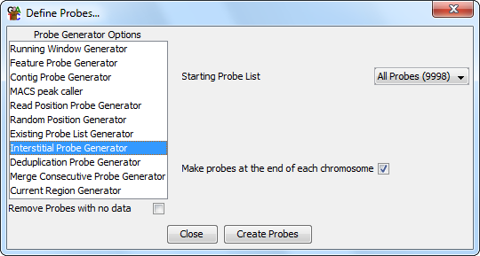

The interstitial probe generator allows you to select an existing probe list and makes a set of probes which fall between the probes in the existing list. For example if you made a set of probes over genes in your genome and then ran this generator you would get a set of probes covering intergenic regions.
